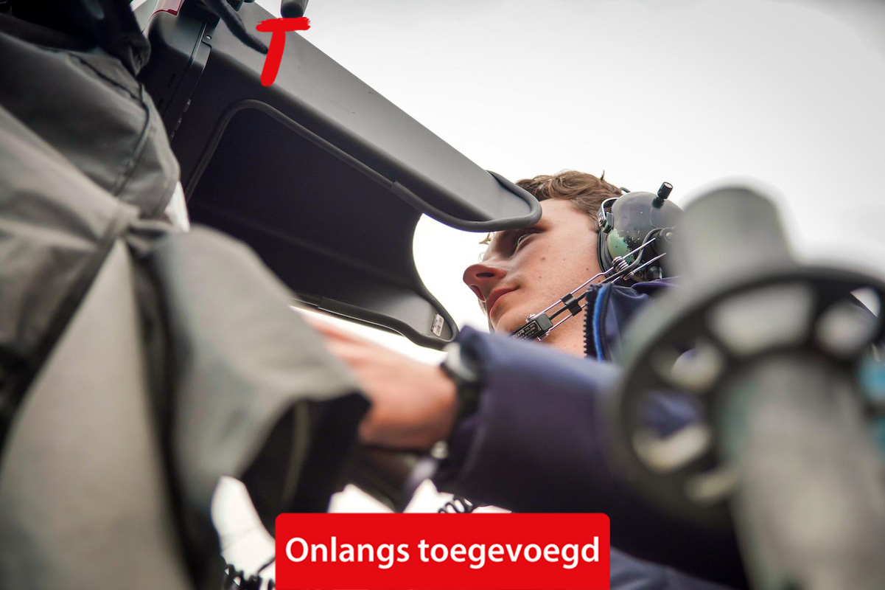
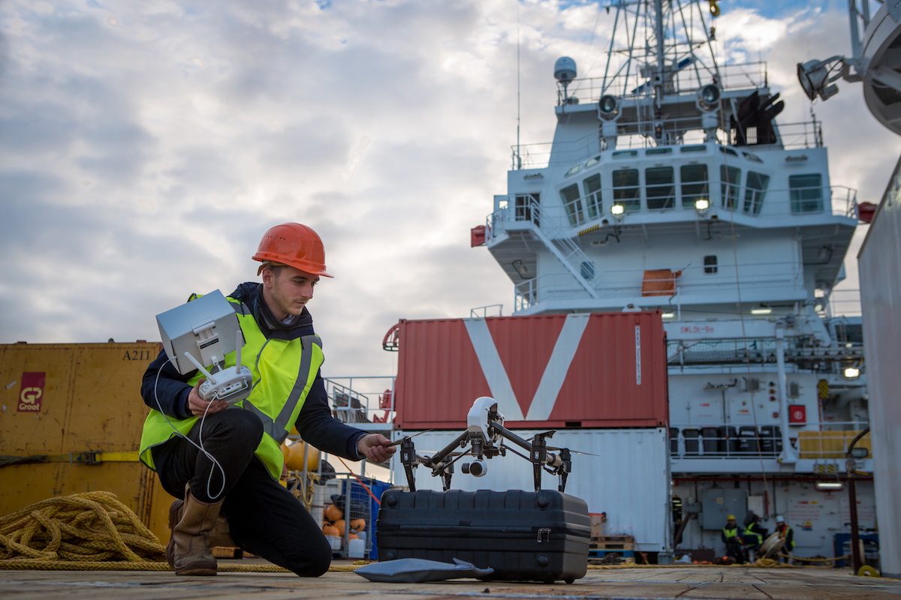
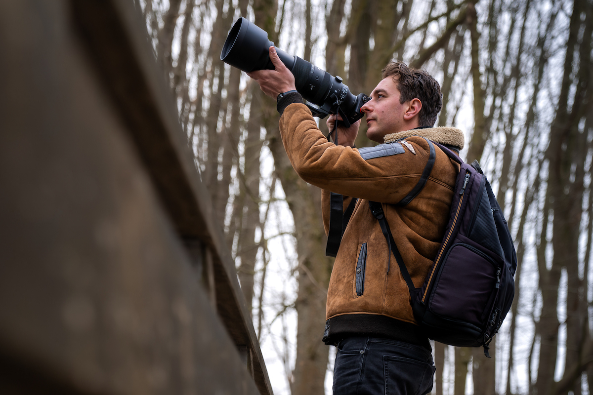
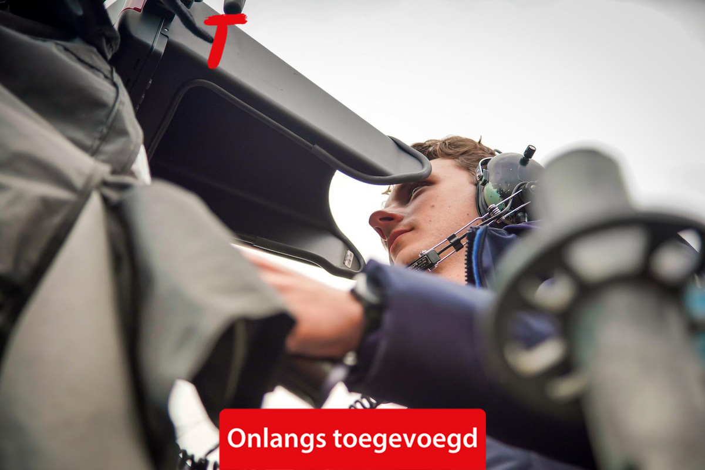
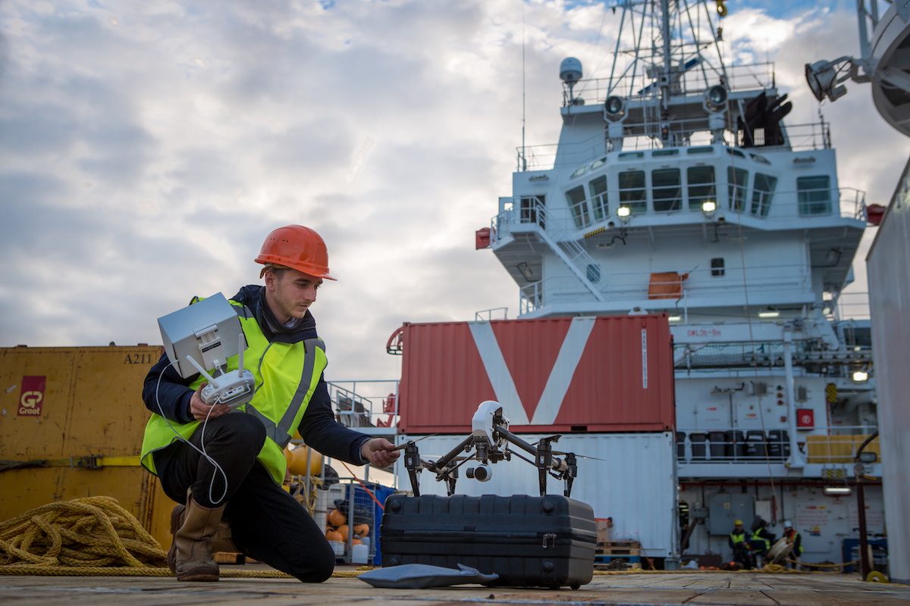
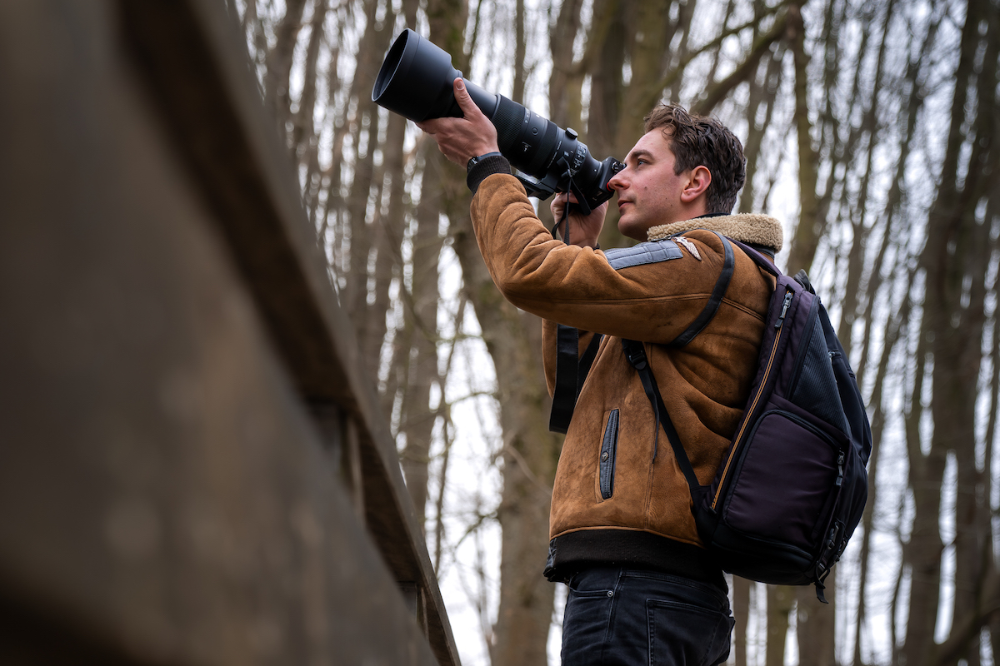

Als ervaren cameraman in onder andere de televisie-industrie werk ik al meer dan tien jaar met toewijding aan het vastleggen van beelden die impact maken.
Mijn werk omvat uiteenlopende projecten, variërend van ENG en Meercamera tot Online Producties en gespecialiseerde opdrachten als Drone-Operator. Met een scherp oog voor detail en een passie voor visuele storytelling streef ik ernaar om elk moment krachtig en betekenisvol te vangen.
Wil je samenwerken of heb je vragen? Neem gerust contact op!